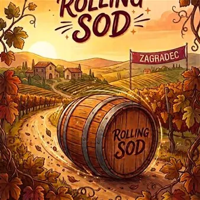

da sab 17 ott a dom 18 ott
Palio delle botti/ Rolling Sod kotaljenje sodov
Palio delle Botti è una gara amatoriale di spinta delle botti, con finalità ludico-sportive, ricreative e di aggregazione sociale, articolata in due categorie (maschile e femminile) in due giorni di gara.
 Indicazioni
Indicazioni
- Costi e prenotazioni
- Costo non indicato · Prenotazione non indicata
- Programma
- Programma da verificare. Apri la fonte ufficiale per orari e possibili aggiornamenti.
- In caso di maltempo
- Nessuna indicazione specifica pubblicata.
- Note
- Acquisito automaticamente dalla fonte.
L’EVENTO
Descrizione completa
Palio delle Botti è una gara amatoriale di spinta delle botti, con finalità ludico-sportive, ricreative e di aggregazione sociale, articolata in due categorie (maschile e femminile) in due giorni di gara.
Sabato 17 ottobre
10.30 Inaugurazione dell'evento Palio delle Botti e apertura degli agriturismi
11.00 Prove libere per i partecipanti
14.00 competizione per definire i campioni comunali
18.30 Musica dal vivo, agriturismo Ostrouska con i Lisjaki)
Domenica 18 ottobre
9.00 Visita alla cava Petrovica (50 posti, iscrizioni presso l'agriturismo Ostrouska)
10.00 Laboratorio con acquarelli "Il sentiero dell'Arte" con Irina Goruppi *
10.00 Visita archeologica guidata alla grotta Tina*
10.30 Laboratorio per bambini "Archeologia sperimentale"*
11.00 Qualificazioni a cronometro
13.00 Inaugurazione della gara Palio delle Botti con la Banda "Ongia" di Muggia
13.30 Sfilata con gli stemmi dei Comuni partecipanti e saluto ufficiale
14.00 Gara Palio delle Botti
15.00 Esibizione del gruppo folcloristico Stu ledi
16.00 Premiazione
18.30 Musica dal vio negli agriturismi Ostrouska con Happy day e Zagrski con 3 Prašički
*iscrizioni presso l'agriturismo Sagrski
°°°°°°°°
Kotaljenje sodov (Palio delle Botti) je ljubiteljsko tekmovane v valjanju sodov, z zabavno-športnim, rekreativnim in druzžabnim namenom, razdeljeno na dve kategoriji (moško in žensko) ter na dva tekmovalna dneva.
sobota 17. oktober
10.30 Otvoritev dogodka in odprtje agriturizmov
11.00 Moznost preizkusov v valjanju sodov
14.00 Tekmovanje za občinskega prvaka v valjanju sodov
18.30 Glasba v živo v agriturizmu Ostrouska z ansamblom Lisjaki
Nedelja 18. oktober
9.00 Ogled kamnoloma Petrovica (50 mest, prijave v agriturizmu Ostrouska)
10.00 Delavnica s akvareli Pot Umetnosti z Irino Goruppi*
10.00 Voden ogled jameTine v spremstvu arheologov*
10.30 Delavnica za otroke Eskperimentalna arheologija*
11.00 Kvalifikacije na čas v kotaljenju sodov
13.00 Otvoritev tekme Palio delle Botti z godbo "Ongia" iz Milj
13.30 Mimohod z grbi sodelujočih Občin in uradni pozdrav
14.00 Tekovanje v valjanju sodov
15.00 Nastop folklorne skupine Stu Ledi
16.00 Nagrajevanje
18.30 Glasba v živo v agriturizmu Ostrouska z ansamblom Happy day in v agriturizmu Zagrski z ansamblom 3 Prašicki
*prijave v agriturizmu Zagrski
IL PROGRAMMA
Programma e orari
Appuntamenti raccolti dalle fonti elencate. Dove manca un orario, non è ancora disponibile in questa scheda.
Programma pubblicato
- 10.30 Inaugurazione dell'evento Palio delle Botti e apertura degli agriturismi
- 11.00 Prove libere per i partecipanti
- 14.00 competizione per definire i campioni comunali
- 18.30 Musica dal vivo, agriturismo Ostrouska con i Lisjaki)
- 9.00 Visita alla cava Petrovica (50 posti, iscrizioni presso l'agriturismo Ostrouska)
- 10.00 Laboratorio con acquarelli "Il sentiero dell'Arte" con Irina Goruppi *
- 10.00 Visita archeologica guidata alla grotta Tina*
- 10.30 Laboratorio per bambini "Archeologia sperimentale"*
- 11.00 Qualificazioni a cronometro
- 13.00 Inaugurazione della gara Palio delle Botti con la Banda "Ongia" di Muggia
- 13.30 Sfilata con gli stemmi dei Comuni partecipanti e saluto ufficiale
- 14.00 Gara Palio delle Botti
- 15.00 Esibizione del gruppo folcloristico Stu ledi
- 16.00 Premiazione
- 18.30 Musica dal vio negli agriturismi Ostrouska con Happy day e Zagrski con 3 Prašički
- 10.30 Otvoritev dogodka in odprtje agriturizmov
- 11.00 Moznost preizkusov v valjanju sodov
- 14.00 Tekmovanje za občinskega prvaka v valjanju sodov
- 18.30 Glasba v živo v agriturizmu Ostrouska z ansamblom Lisjaki
- 9.00 Ogled kamnoloma Petrovica (50 mest, prijave v agriturizmu Ostrouska)
- 10.00 Delavnica s akvareli Pot Umetnosti z Irino Goruppi*
- 10.00 Voden ogled jameTine v spremstvu arheologov*
- 10.30 Delavnica za otroke Eskperimentalna arheologija*
- 11.00 Kvalifikacije na čas v kotaljenju sodov
- 13.00 Otvoritev tekme Palio delle Botti z godbo "Ongia" iz Milj
- 13.30 Mimohod z grbi sodelujočih Občin in uradni pozdrav
- 14.00 Tekovanje v valjanju sodov
- 15.00 Nastop folklorne skupine Stu Ledi
- 16.00 Nagrajevanje
- 18.30 Glasba v živo v agriturizmu Ostrouska z ansamblom Happy day in v agriturizmu Zagrski z ansamblom 3 Prašicki
INFORMAZIONI UTILI
Prima di partire
- Controllare la fonte prima di partire.
ORGANIZZAZIONE